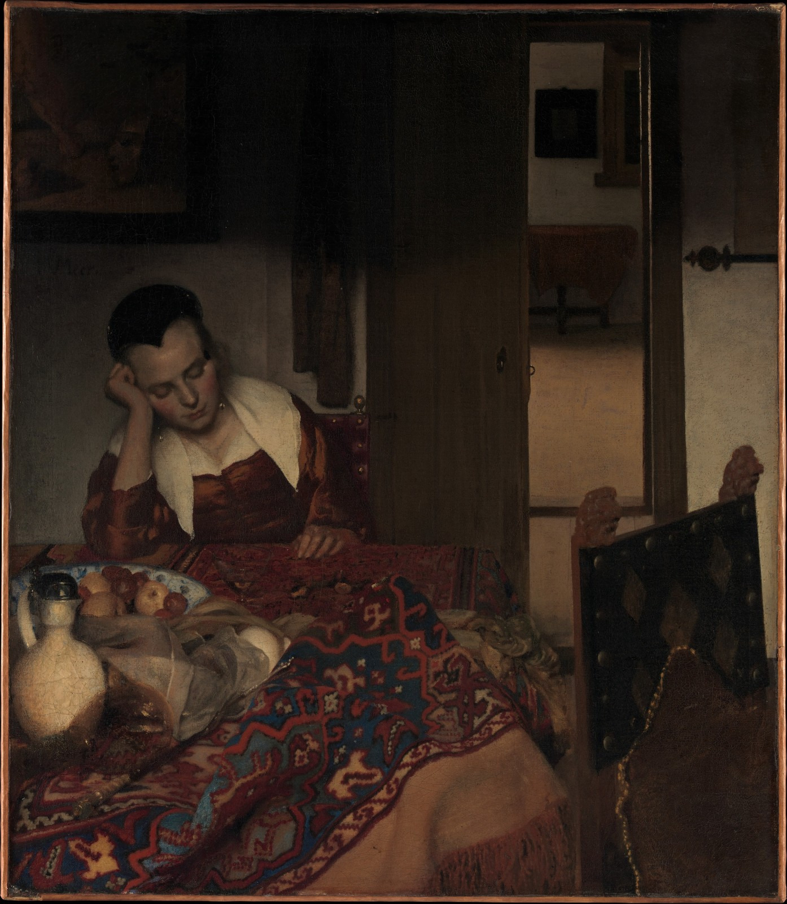
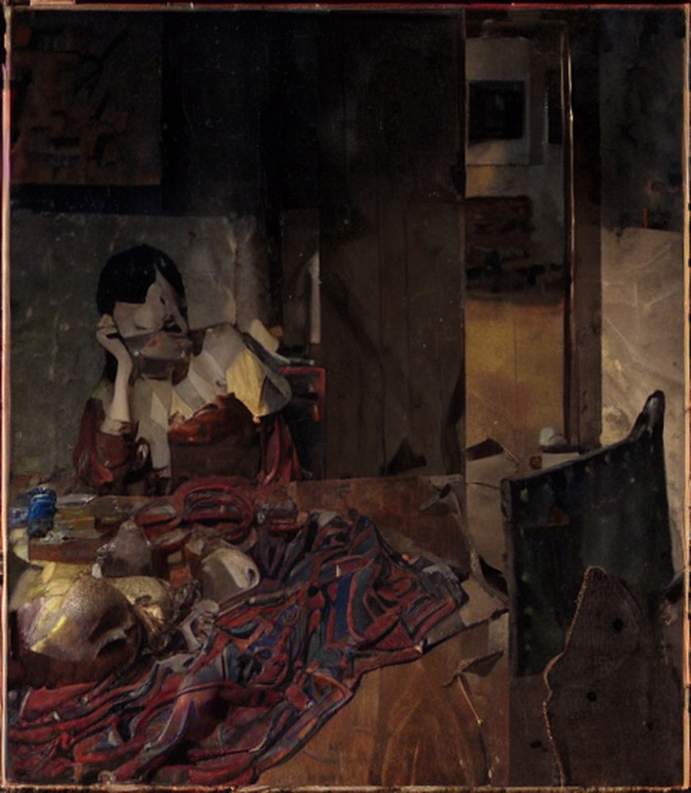
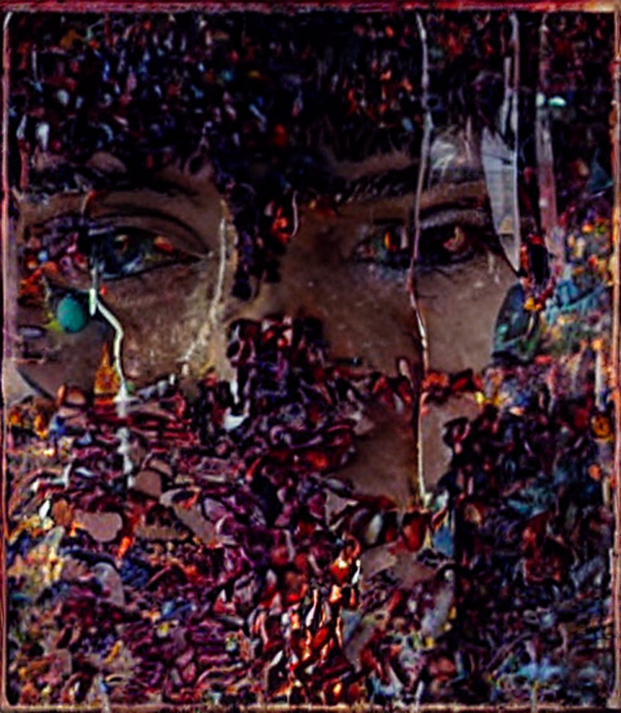

PLEB Art Consulting · Technische Hochschule Augsburg
VALLIS SIMULACRI
Das Tal der Ähnlichkeit
WO ENDET KUNST?
Vor dir hängt ein Gemälde von Menschenhand. Dann zeigt eine KI dir dasselbe
Bild zehnmal — und nimmt sich jedes Mal mehr heraus. Irgendwann zuckt dein
Gesicht. Genau dort endet für dich die Kunst.

Bild 0Die menschliche Hand
ARS

Bild 5Noch Kunst
ABEAT

Bild 10Nicht mehr
Johannes Vermeer, Schlafendes Mädchen (1657) —
und zwei der zehn Fassungen, die unsere Pipeline daraus erzeugt.
Wo genau die Grenze liegt, entscheidet jeder Mensch anders.
Was mit dir passiert
1
Annäherung
Heb beide Hände. Das ist deine Einwilligung, gemessen zu werden —
und der Startschuss.
2
Grundlinie
19 Sekunden mit dem unberührten Original. Die Kamera liest dabei dein
ruhiges Gesicht. Das ist deine persönliche Null.
3
Galerie
Zehn KI-Fassungen, alle drei Sekunden eine neue. Jede nimmt sich mehr
heraus als die davor.
4
Urteil
Das Bild mit deiner stärksten Reaktion ist der Bruchpunkt.
Alles davor war Kunst.
Die Anlage in Zahlen
263
gemeinfreie Gemälde
Metropolitan Museum & Wikimedia
10
KI-Fassungen
pro Gemälde
52
Muskelsignale im Gesicht
zehnmal pro Sekunde gelesen
0
gespeicherte Videos
nur anonyme Zahlen
ARS
„Kunst“ — das letzte Bild, das für dich noch eines war.
ABEAT
„Es weiche“ — das Bild, bei dem dein Gesicht gesprochen hat,
bevor du es konntest.
„Diese Grenze hast du gezogen —
nicht die Maschine.“